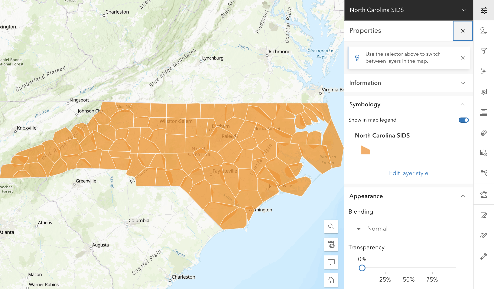

library(arcgis)Overwrite Hosted Feature Layer
Using the truncate and append workflow
From time to time as the owner of a Feature Layer, you may need to completely overwrite the data in the service. Overwriting a web layer from ArcGIS Pro may lead to a loss of associated pop-ups and symbology. One way to get around this is to truncate the feature service and append new data to the same service.
For this example, we need to be the owner of a Feature Service. As such, we will use the North Carolina SIDS dataset we created in the Publishing from R tutorial. If you have not done that tutorial, complete it first.
Truncating a Feature Layer
Truncating a Feature Layer deletes every single record in the service and resets the auto-increment of the object ID. Truncating a service does not change the field definitions or permit us to add or remove fields. If you wish to do so, publish a new layer instead.
Before we can modify a service, we must first authorize ourselves with the portal. To do so we will use the auth_code() authorization flow. If you have not yet configured you environment to authorize with your portal, follow the Connecting to your Portal tutorial.
First load arcgis.
Attaching core arcgis packages:
- {arcgisutils} v0.1.0
- {arcgislayers} v0.1.0Next, authorize with the portal and set the access token.
token <- auth_code()
set_auth_token(token)Token set to environment variable `ARCGIS_TOKEN`Now that we have verified our identity with our portal we can create a FeatureLayer object in R from our hosted service. From your content listing find the Feature Layer url.
Tip
Revisit the “Obtaining a feature layer url” section of the Read hosted data tutorial if you forgot how to retrieve the service url.
furl <- "https://services1.arcgis.com/hLJbHVT9ZrDIzK0I/arcgis/rest/services/North%20Carolina%20SIDS/FeatureServer/0"
nc <- arc_open(furl)
nc<FeatureLayer>
Name: North Carolina SIDS
Geometry Type: esriGeometryPolygon
CRS: 4267
Capabilities: Create,Delete,Query,Update,EditingThis is the url of your hosted feature service. Yours will be different than the URL shown here. Note that the /0 indicates the layer index. You can often copy the url from under the URL section on the right hand menu and append the /0 to it.
Before we can truncate the FeatureLayer, we should check to see that the layer itself supports this operation. The supportsTruncate attribute will return TRUE if we can truncate it. If not, we’re out of luck and need to create an entirely new service!
nc[["supportsTruncate"]]Since we know that we can truncate the service, we can go ahead and do so.
truncate_res <- truncate_layer(nc)
truncate_resWe store the result into truncate_res to see the results. Let’s now go ahead and refresh our layer and check to see if the changes have taken place.
nc <- refresh_layer(nc)
nc<FeatureLayer>
Name: North Carolina SIDS
Geometry Type: esriGeometryPolygon
Capabilities: Create,Delete,Query,Update,EditingAfter refreshing the layer we can see that there are now 0 features! Success! There are still 15 fields and we still have the same name and geometry type.
Adding features
Now that we have deleted all of the features of the layer, lets go ahead and add some new ones. Let’s read the nc.shp file from sf into memory, give it a slight modification, and add those features to our service.
library(sf)Linking to GEOS 3.11.2, GDAL 3.7.2, PROJ 9.3.0; sf_use_s2() is TRUEnc_sf <- read_sf(system.file("shape/nc.shp", package = "sf"))
nc_sfSimple feature collection with 100 features and 14 fields
Geometry type: MULTIPOLYGON
Dimension: XY
Bounding box: xmin: -84.32385 ymin: 33.88199 xmax: -75.45698 ymax: 36.58965
Geodetic CRS: NAD27
# A tibble: 100 × 15
AREA PERIMETER CNTY_ CNTY_ID NAME FIPS FIPSNO CRESS_ID BIR74 SID74 NWBIR74
<dbl> <dbl> <dbl> <dbl> <chr> <chr> <dbl> <int> <dbl> <dbl> <dbl>
1 0.114 1.44 1825 1825 Ashe 37009 37009 5 1091 1 10
2 0.061 1.23 1827 1827 Alle… 37005 37005 3 487 0 10
3 0.143 1.63 1828 1828 Surry 37171 37171 86 3188 5 208
4 0.07 2.97 1831 1831 Curr… 37053 37053 27 508 1 123
5 0.153 2.21 1832 1832 Nort… 37131 37131 66 1421 9 1066
6 0.097 1.67 1833 1833 Hert… 37091 37091 46 1452 7 954
7 0.062 1.55 1834 1834 Camd… 37029 37029 15 286 0 115
8 0.091 1.28 1835 1835 Gates 37073 37073 37 420 0 254
9 0.118 1.42 1836 1836 Warr… 37185 37185 93 968 4 748
10 0.124 1.43 1837 1837 Stok… 37169 37169 85 1612 1 160
# ℹ 90 more rows
# ℹ 4 more variables: BIR79 <dbl>, SID79 <dbl>, NWBIR79 <dbl>,
# geometry <MULTIPOLYGON [°]>Rather than publish the polygons as they are, let’s calculate the convex hull of each shape and publish those.
nc_convex <- st_convex_hull(nc_sf)
plot(st_geometry(nc_convex))Let’s take this sf object and add them as features to our now empty FeatureLayer. To add features, we use the add_features() function. The first argument is the FeatureLayer (or Table) that we are adding features to. The second is the sf object that we will be adding to the layer.
Tip
It is important to note that the column names of the sf object must match the names of the fields in the FeatureLayer, otherwise arcgis does not know which column matches which field.
add_res <- add_features(nc, nc_convex)Warning: CRS missing from `x` cannot verify matching CRS.We receive a warning because there is no spatial reference in the hosted FeatureLayer after truncating. Print the add_res object to see if each feature was successfully added.
head(add_res) objectId uniqueId globalId success
1 1 1 NA TRUE
2 2 2 NA TRUE
3 3 3 NA TRUE
4 4 4 NA TRUE
5 5 5 NA TRUE
6 6 6 NA TRUENow that we have added our features, let us refresh the layer again.
nc <- refresh_layer(nc)<FeatureLayer>
Name: North Carolina SIDS
Geometry Type: esriGeometryPolygon
CRS: 4267
Capabilities: Create,Delete,Query,Update,EditingIf you view the hosted Feature Layer in the map viewer, you should now see the convex hulls.
